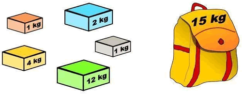

首页 > 编程笔记
部分背包问题
在限定条件下，如何从众多物品中选出收益最高的几件物品，这样的问题就称为背包问题。
举个简单的例子，商店的货架上摆放着不同重量和价值的商品，一个小偷在商店行窃，他携带的背包只能装固定重量的商品，选择哪些商品才能获得最大的收益呢？这个问题就属于背包问题，限定条件是背包的承重，最终目标是令背包中存放的物品的总收益最高。
根据不同的限定条件，背包问题还可以有更细致的划分：
不同的背包问题，对应的解决方案也不相同。本节我们给大家讲解，如何用贪心算法解决部分背包问题。
对于每件商品，顾客可以购买商品的一部分（可再分）。一个小偷想到商店行窃，他的背包最多只能装 50 斤的商品，如何选择才能获得最大的收益呢？
贪心算法解决此问题的思路是：计算每个商品的收益率（收益/重量），优先选择收益率最大的商品，直至所选商品的总重量达到 50 斤。
如下是使用贪心算法解决此问题的伪代码：
如下是根据伪代码编写的 C 语言程序：
如下是根据伪代码编写的 Java 程序：
如下是根据伪代码编写的 Python 程序：
以上程序的输出结果均为：

图 1 背包问题
举个简单的例子，商店的货架上摆放着不同重量和价值的商品，一个小偷在商店行窃，他携带的背包只能装固定重量的商品，选择哪些商品才能获得最大的收益呢？这个问题就属于背包问题，限定条件是背包的承重，最终目标是令背包中存放的物品的总收益最高。
根据不同的限定条件，背包问题还可以有更细致的划分：
- 0-1 背包问题：每件物品都不可再分，要么整个装入背包，要么放弃，不允许出现类似“将物品的 1/3 装入背包”的情况；
- 部分背包问题：每件物品是可再分的，即允许将某件物品的一部分（例如 1/3）放入背包；
- 完全背包问题：挑选物品时，每件物品可以选择多个，也就是说不限物品的数量。
- 多重背包问题：每件物品的数量是有严格规定的，比如物品 A 有 2 件，物品 B 有 3 件。
不同的背包问题，对应的解决方案也不相同。本节我们给大家讲解，如何用贪心算法解决部分背包问题。
贪心算法解决部分背包问题
假设商店中有 3 种商品，它们各自的重量和收益是：- 商品 1：重量 10 斤，收益 60 元；
- 商品 2：重量 20 斤，收益 100 元；
- 商品 3：重量 30 斤，收益 120 元。
对于每件商品，顾客可以购买商品的一部分（可再分）。一个小偷想到商店行窃，他的背包最多只能装 50 斤的商品，如何选择才能获得最大的收益呢？
贪心算法解决此问题的思路是：计算每个商品的收益率（收益/重量），优先选择收益率最大的商品，直至所选商品的总重量达到 50 斤。
如下是使用贪心算法解决此问题的伪代码：
// w 存储各个商品的重量，p 存储各个商品的收益，W 表示背包的承重
fractional_knapsack(w[] , p[] , W):
sort(w , p) //根据收益率对商品进行排序
i <- 0
while W > 0: //只要背包还有剩余空间，就一直装
temp = min(W , w[i]) //判断该商品能否全部装入
result[i] <- temp/w[i] //将实际装入到背包中的商品量以百分比的方式存储起来
W <- W - temp //计算背包的剩余容量，为装后续商品做准备
i <- i + 1
return result //返回统计装入信息的 result
如下是根据伪代码编写的 C 语言程序：
#include <stdio.h>
#define N 3 //设定商品数量
//根据收益率，对记录的商品进行从大到小排序
void Sort(float w[], float p[]) {
int i,j;
float temp;
float v[N] = { 0 };
//用v[]存商品的收益率
for (i = 0; i < N; i++)
v[i] = p[i] / w[i];
//根据 v 数组记录的各个商品收益率的大小，同时对 w 和 p 数组进行排序
for (i = 0; i < N; i++) {
for (j = i + 1; j < N; j++) {
if (v[i] < v[j]) {
temp = v[i];
v[i] = v[j];
v[j] = temp;
temp = w[i];
w[i] = w[j];
w[j] = temp;
temp = p[i];
p[i] = p[j];
p[j] = temp;
}
}
}
}
/*贪心算法解决部分背包问题
w：记录各个商品的总重量
p：记录各个商品的总价值
result：记录各个商品装入背包的比例
W：背包的容量
*/
void fractional_knapsack(float w[], float p[], float result[], float W) {
float temp = 0;
int i = 0;
//根据收益率，重新商品进行排序
Sort(w, p);
//从收益率最高的商品开始装入背包，直至背包装满为止
while (W > 0) {
temp = W > w[i] ? w[i] : W;
result[i] = temp / w[i];
W -= temp;
i++;
}
}
int main() {
int i;
//统计背包中商品的总收益
float values = 0;
//各个商品的重量
float w[N] = { 10,30,20 };
//各个商品的收益
float p[N] = { 60,100,120 };
float result[N] = { 0 };
//调用解决部分背包问题的函数
fractional_knapsack(w, p, result, 50);
//根据 result 数组中记录的数据，决定装入哪些商品
for (i = 0; i < N; i++) {
if (result[i] == 1) {
printf("总重量为 %f,总价值为 %f 的商品全部装入\n", w[i], p[i]);
values += p[i];
}
else if (result[i] == 0)
printf("总重量为 %f,总价值为 %f 的商品不装\n", w[i], p[i]);
else {
printf("总重量为 %f,总价值为 %f 的商品装入 %f%%\n", w[i], p[i], result[i] * 100);
values += p[i] * result[i];
}
}
printf("最终收获的商品价值为 %.2f\n", values);
return 0;
}
如下是根据伪代码编写的 Java 程序：
public class Demo {
//根据收益率，对记录的商品进行从大到小排序
public static void sort(float [] w, float [] p) {
int length = w.length;
//用v[]存商品的收益率
float [] v = new float[length];
for (int i=0;i<length;i++) {
v[i] = p[i]/w[i];
}
//根据 v 数组记录的各个商品收益率的大小，同时对 w 和 p 数组进行排序
for (int i = 0; i < length; i++) {
for (int j = i + 1; j < length; j++) {
if (v[i] < v[j]) {
float temp = v[i];
v[i] = v[j];
v[j] = temp;
temp = w[i];
w[i] = w[j];
w[j] = temp;
temp = p[i];
p[i] = p[j];
p[j] = temp;
}
}
}
}
/*贪心算法解决部分背包问题
w：记录各个商品的总重量
p：记录各个商品的总价值
result：记录各个商品装入背包的比例
W：背包的容量
*/
public static void fractional_knapsack(float []w, float []p, float []result, float W) {
//根据收益率，重新对商品进行排序
sort(w, p);
int i=0;
//从收益率最高的商品开始装入背包，直至背包装满为止
while (W > 0) {
float temp = W > w[i]?w[i]:W;
result[i] = temp / w[i];
W -= temp;
i++;
}
}
public static void main(String[] args) {
//设定背包的容量
float W = 50;
//各个商品的重量
float [] w = { 10,30,20 };
//各个商品的价值
float [] p = { 60,100,120 };
//统计背包中商品的总收益
float [] result = {0,0,0};
//调用解决部分背包问题的函数
fractional_knapsack(w,p,result,W);
//统计背包中商品的总收益
float values = 0;
//根据 result 数组中记录的数据，决定装入哪些商品
for (int i = 0; i < w.length; i++) {
if (result[i] == 1) {
System.out.println("总重量为"+w[i]+",总价值为"+p[i]+"的商品全部装入");
values += p[i];
}
else if (result[i] == 0)
System.out.println("总重量为"+w[i]+",总价值为"+p[i]+"的商品不装");
else {
System.out.println("总重量为"+w[i]+",总价值为"+p[i]+"的商品装入"+result[i]*100+"%");
values += p[i] * result[i];
}
}
System.out.print("最终收获的商品价值为"+values);
}
}
如下是根据伪代码编写的 Python 程序：
#设定背包的容量
W = 50
#各个商品的重量
w = [10,30,20]
#各个商品的价值
p = [60,100,120]
#根据收益率，对记录的商品进行从大到小排序
def sort():
#用v列表存商品的收益率
v = []
length = len(w)
for i in range(length):
v.append(p[i]/w[i])
#根据 v 列表记录的各个商品收益率的大小，同时对 w 和 p 数组进行排序
for i in range(length):
for j in range(i+1,length):
if v[i] < v[j]:
v[i],v[j] = v[j],v[i]
w[i],w[j] = w[j],w[i]
p[i],p[j] = p[j],p[i]
result = [0,0,0]
def fractional_knapsack():
global W
#根据收益率，重新对商品进行排序
sort()
i = 0
#从收益率最高的商品开始装入背包，直至背包装满为止
while(W>0):
temp = min(W,w[i])
result[i] = temp/w[i]
W = W - temp
i = i + 1
fractional_knapsack()
#统计背包中商品的总收益
values = 0
#根据 result 列表中记录的数据，决定装入哪些商品
for i in range(len(result)):
if result[i] ==1:
print("总重量为 %f,总价值为 %f 的商品全部装入"%(w[i],p[i]))
values = values + p[i]
elif result[i]==0:
print("总重量为 %f,总价值为 %f 的商品不装"%(w[i],p[i]))
else:
print("总重量为 %f,总价值为 %f 的商品装入%f%%"%(w[i],p[i],result[i]*100))
values = values + p[i]*result[i]
print("最终收获的商品价值为：%f" %(values))
以上程序的输出结果均为：
总重量为 10.000000,总价值为 60.000000 的商品全部装入
总重量为 20.000000,总价值为 120.000000 的商品全部装入
总重量为 30.000000,总价值为 100.000000 的商品装入66.666667%
最终收获的商品价值为：246.666667
关注公众号「站长严长生」，在手机上阅读所有教程，随时随地都能学习。内含一款搜索神器，免费下载全网书籍和视频。

微信扫码关注公众号